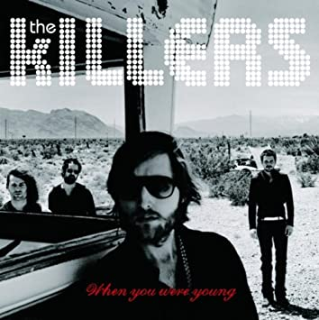
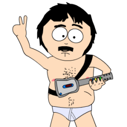

WHEN YOU WHERE YOUNG

"When You Were Young" é uma música composta e tocada pela banda norte-americana de rock
The Killers. A música faz parte do segundo álbum da banda, Sam's Town. A música foi lançada como
o principal single do álbum, em Setembro de 2006. Foi um dos singles da banda que obtiveram maior
sucesso, alcançando a 14.ª posição no US Hot 100 (apenas "Mr. Brightside" atingira posição maior,
ficando em 10º no ano de 2004) e a 1ª posição no US Modern Rock Tracks. "When You Were Young"
atingiu a segunda posição no Reino Unido, e a 10.ª na Austrália.
A música mostra a banda adotando um estilo de música mais "americano". "When You Were Young"
foi muito comparada ao estilo de Bruce Springsteen, além de ter sido o fator catalisador da
grande divisão de opiniões acerca do segundo álbum do grupo. Apesar de tudo, ela foi indicada
para o Grammy de 2007 para "Melhor Música de Rock", e o videoclipe da música
(dirigido por Anthony Mandler e gravado em Tlayacapan, no México), recebeu outra indicação ao
Grammy. O single atingiu, também, a 69ª posição no 100 Músicas Mais-Vendidas de 2006 do
iTunes, além da 4ª posição no Triple J Hottest de 2006.

Randy Marsh Approves This Site